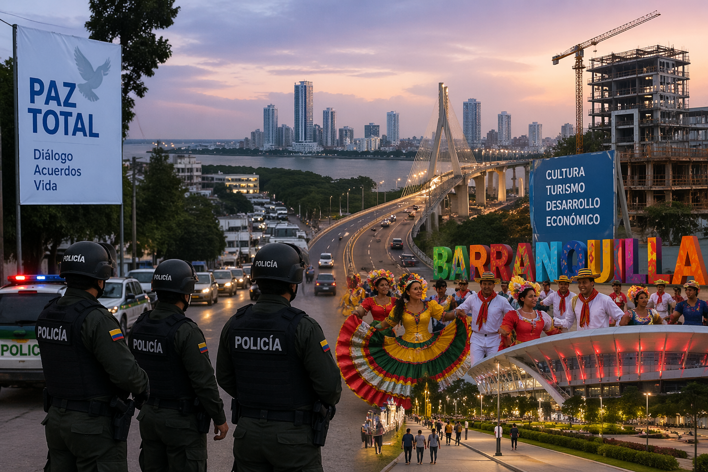
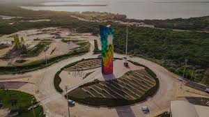

Barranquilla ha sido noticia recientemente por el desarrollo de procesos de seguridad y política urbana en la ciudad, en medio de los esfuerzos del Gobierno por avanzar en la llamada “paz total”. Sin embargo, estos procesos han tenido dificultades para lograr acuerdos duraderos con grupos criminales, lo que mantiene retos en materia de orden público. Al mismo tiempo, la ciudad sigue siendo un punto importante de actividades culturales y económicas en la región Caribe, con eventos, turismo y proyectos de desarrollo urbano que continúan impulsando su crecimiento.

Barranquilla presenta una recuperación económica moderada en 2026, impulsada por el aumento en el recaudo de impuestos y la actividad del comercio. Aunque varios empresarios reportan disminución en ventas y menor inversión, sectores como el turismo y los eventos culturales continúan generando movimiento económico en la ciudad. En general, la ciudad avanza en su recuperación, pero aún enfrenta retos en empleo e inversión.
También ha tenido participación en protestas y movilizaciones de sectores laborales.

Economía, servicios y ciudad Ya está activo el proceso para pagar el impuesto vehicular 2026 en Atlántico; hay plazo hasta el 10 de julio sin intereses. Continúan obras importantes como la transformación de la calle 72 y avances en el aeropuerto Ernesto Cortissoz. La industria manufacturera está impulsando el crecimiento económico de Barranquilla con apoyo tecnológico..
Shakira lanzó junto a Beéle un video musical que rinde homenaje a Barranquilla, mostrando sitios icónicos y tradiciones del Carnaval.